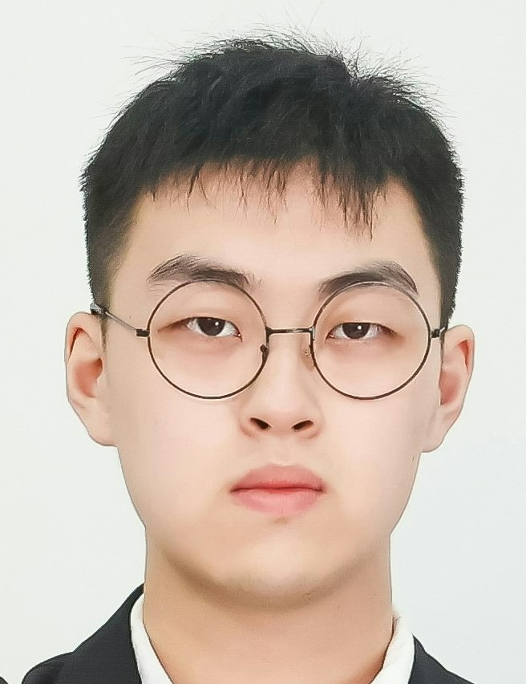

|
 |
Chunming He |
I am a second-year master student at Tsinghua University advised by Prof. Xiu Li. Now I work closely with Dr. Kai Li and Dr. Yulun Zhang. Previously, I received my B.Eng. degree from Nanjing University of Posts and Telecommunications (NJUPT) under the supervision of Prof. Hu Zhu and Dr. Guoxia Xu.
My research interests focus on low-level vision, including image enhancement, image fusion, and image dehazing. I am also interested in conceald object segmentation.
[Feb. 2023] One paper accepted by CVPR 2023.
[Jan. 2023] One paper accepted by IEEE TNNLS (IF=14.26).
[Oct. 2022] One paper accepted by IEEE TITS (IF=9.55).
[Sep. 2022] One paper accepted by MedIA (IF=13.83), Congrats to Lei Xu!
[Aug. 2022] One paper accepted by IEEE TITS (IF=9.55).
Here is a list of my publications (selected).
For full publications, please refer to my Google Scholar.
Accepted († equal contribution, * corresponding author)
Camouflaged Object Detection with Feature Decomposition and Edge Reconstruction
Chunming He, Kai Li*, Yachao Zhang, Longxiang Tang, Yulun Zhang, Zhenhua Guo, Xiu Li*
IEEE International Conference on Computer Vision and Pattern Recognition (CVPR), 2023 [PDF] [CODE]
DM-Fusion: Deep Model-Driven Network for Heterogeneous Image Fusion
Guoxia Xu†, Chunming He†, Hao Wang*, Hu Zhu, Weiping Ding
IEEE Transactions on Neural Networks and Learning Systems (TNNLS), 2022
[PDF]
IVF-Net: An Infrared and Visible Data Fusion Deep Network for Traffic Object Enhancement in Intelligent Transportation Systems
Mingye Ju†, Chunming He†, Juping Liu, Bin Kang, Jian Su, Dengyin Zhang
IEEE Transactions on Intelligent Transportation Systems (TITS), 2022
[PDF]
PcGAN: A Noise Robust Conditional Generative Adversarial Network for One Shot Learning
Lizhen Deng†, Chunming He†, Guoxia Xu, Hu Zhu*, Hao Wang
IEEE Transactions on Intelligent Transportation Systems (TITS), 2022
[PDF]
Multi-modal sequence learning for Alzheimer’s disease progression prediction with incomplete variable-length longitudinal data
Lei Xu, Hui Wu, Chunming He, Jun Wang, Changqing Zhang, Feiping Nie, Lei Chen*
Medical Image Analysis (MedIA), 2022
[PDF]
Under Review
Strategic Preys Make Acute Predators: Enhancing Camouflaged Object Detectors by Generating Camouflaged Objects
Chunming He, Kai Li*, Yachao Zhang, Guoxia Xu, Longxiang Tang, Yulun Zhang, Zhenhua Guo, Xiu Li*
Submitted to International Conference on Computer Vision (ICCV), 2023
Degradation-Resistant Unfolding Network for Heterogeneous Image Fusion
Chunming He, Kai Li, Guoxia Xu, Yulun Zhang, Runze Hu, Zhenhua Guo, Xiu Li*
Submitted to International Conference on Computer Vision (ICCV), 2023
Weakly-Supervised Concealed Object Segmentation with SAM-based Pseudo Labeling and Multi-scale Feature Grouping
Chunming He†, Kai Li†, Yachao Zhang, Guoxia Xu, Longxiang Tang, Yulun Zhang, Zhenhua Guo, Xiu Li*
Submitted to Advances in Neural Information Processing Systems (NeurIPS), 2023 [PDF]
HQG-Net: Unpaired Medical Image Enhancement with High-Quality Guidance
Chunming He, Kai Li, Guoxia Xu, Jiangpeng Yan, Longxiang Tang, Yulun Zhang, Xiu Li*, Yaowei Wang
Submitted to IEEE Transactions on Neural Networks and Learning Systems (TNNLS), major revision
First-class Scholarship, Tsinghua Shenzhen International Graduate School, 2022
Tsinghua University, China
Teaching Assistant for Intelligent Unmanned Delivery in Meituan (美团智能无人配送), 2022
Reviewer for IEEE TITS, IET Image Processing, Multimedia Tools and Applications
Reviewer for ICCV23, NeurIPS23